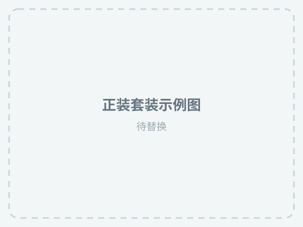
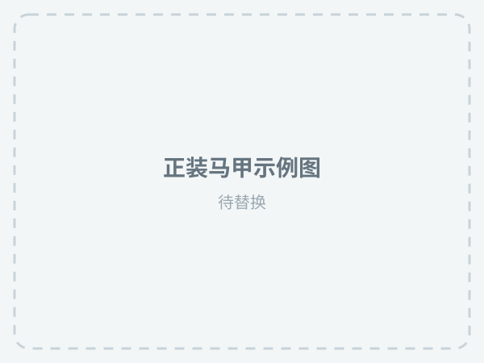
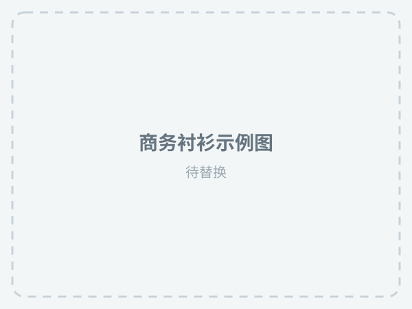

正装上装
西装外套／商务西装
男士＋西装外套／商务西装＋扣型／版型＋材质／功能＋颜色／纹样＋场合＋季节
示例：男士纯色修身单排扣西装外套，适合商务办公、婚礼及正式场合，春秋穿着
商品链接优化
不要同时修改标题、主图、价格和详情页。先根据商品表现缩小问题范围，再按对应清单逐项检查。
选择最接近当前商品表现的情况，再进入对应方法。
以下内容不需要按顺序全部执行，只查看与你当前问题相关的部分。
先让平台准确识别商品，再补充真实且有区分度的属性。
基础款至少覆盖这四项，核心品类词尽量靠前。
| 中文词 | 英文翻译 | 英文搜索关键词（变体） |
|---|---|---|
| 男士 | Men's | men's, mens, men, man's, man, male |
| 衬衫 | Shirt | shirt, shirts |
| 马甲 | Vest/Gilet | vest, gilet, waistcoat |
| 西装外套 | Blazer/Suit Jacket | blazer, suit jacket, sports coat, sport coat |
| 西裤 | Dress Pants/Trousers | dress pants, trousers, suit pants, formal pants |
| 西装套装 | Suit Set/Formal Suit | suit set, suit, suits, formal suit, business suit |
| 中文词 | 英文翻译 | 英文搜索关键词（变体） |
|---|---|---|
| 宽松版 | Loose Fit | loose fit, loose, loose-fit, relaxed fit, relaxed |
| 修身版 | Slim Fit | slim fit, slim-fit, slim, muscle fit |
| 常规版 | Regular Fit | regular fit, regular-fit, regular, standard fit |
| 合身版 | Tailored Fit | tailored fit, fitted, fitted fit |
| V领 | V-Neck | v-neck, v neck, vneck |
| 翻领 | Lapel/Collar | lapel, collar, turned-down collar, fold-over collar |
| 纽扣 | Button | button, buttons, button closure |
| 单排扣 | Single-Breasted | single-breasted, single breasted, single row button |
| 双排扣 | Double-Breasted | double-breasted, double breasted, double row button |
| 中文词 | 英文翻译 | 英文搜索关键词（变体） |
|---|---|---|
| 纯棉 | Pure Cotton | pure cotton, 100% cotton, all cotton |
| 棉混纺 | Cotton Blend | cotton blend, cotton blended, cotton-mixed |
| 涤纶 | Polyester | polyester |
| 亚麻 | Linen | linen, flax |
| 棉麻 | Cotton Linen | cotton linen, cotton-linen, linen cotton, cotton and linen |
| 弹力 | Stretch/Elastic | stretch, stretchy, elastic, elastane, spandex |
| 透气 | Breathable | breathable, ventilated, ventilation, air-permeable |
| 纯色 | Solid Color | solid color, solid, plain |
| 条纹 | Striped | stripe, striped, stripe pattern, pinstripe |
| 格纹 | Plaid/Checkered | plaid, checkered, check, checked, tartan, gingham |
| 长袖 | Long Sleeve | long sleeve, long-sleeve, long-sleeved, full sleeve |
| 中文词 | 英文翻译 | 英文搜索关键词（变体） |
|---|---|---|
| 商务风 | Business Style | business, business style, business professional |
| 通勤风 | Commuter Style | commuter, commute, commuting style, work wear style |
| 休闲日常 | Casual/Daily | casual, everyday, daily, leisure, leisurely |
| 商务 | Business | business, business occasion |
| 办公室 | Office | office, workplace |
| 正装 | Formal | formal, formal occasion, formal wear, formal attire |
| 商务休闲 | Business Casual | business casual, smart casual, business-casual |
| 中文词 | 英文翻译 | 英文搜索关键词（变体） |
|---|---|---|
| 两件套 | 2pc Set/Two-Piece | 2pc, 2pcs, 2 pcs, 2 piece, two piece, two-piece, 2-pc |
| 三件套 | 3pc Set/Three-Piece | 3pc, 3pcs, 3 pcs, 3 piece, three piece, three-piece, 3-pc |
| 西装两件套 | Suit 2-Piece Set | suit 2-piece set, two-piece suit, 2pc suit, suit and trousers set, suit and pants set |
| 西装三件套 | Suit 3-Piece Set | suit 3-piece set, three-piece suit, 3pc suit, suit vest trousers set |
| 马甲西装套装 | Vest & Suit Set | vest suit set, waistcoat suit set, vest and blazer set, vest and suit set |
| 中文词 | 英文翻译 | 英文搜索关键词（变体） |
|---|---|---|
| 春季 | Spring | spring, spring season |
| 夏季 | Summer | summer, summer season |
| 秋季 | Autumn/Fall | autumn, fall, autumn season, fall season |
| 冬季 | Winter | winter, winter season |
| 春秋 | Spring/Autumn | spring/autumn, spring and autumn, spring fall, transitional |
| 四季 | Four Seasons | four seasons, all seasons, 4 seasons |
| 黑色 | Black | black |
| 白色 | White | white |
| 灰色 | Gray/Grey | gray, grey |
| 深灰色 | Dark Gray | dark gray, dark grey, charcoal, charcoal gray, charcoal grey |
| 浅灰色 | Light Gray | light gray, light grey, ash gray, ash grey, heather gray |
| 米色 | Beige | beige, cream, off-white, sand |
| 卡其色 | Khaki | khaki, khaki color, kakhi |
| 藏青色 | Navy Blue | navy, navy blue, nautical blue, marine blue, midnight blue |
| 棕色 | Brown | brown |
| 中文词 | 英文翻译 | 英文搜索关键词（变体） |
|---|---|---|
| 廓形版 | Oversized/Boxy | oversized, oversize, boxy fit, boxy, baggy, relaxed fit |
| oversize风 | Oversized Style | oversized, oversize, oversized fit, oversized style |
| 圆领 | Crew Neck/Round Neck | crew neck, crewneck, round neck, round-neck |
| 立领 | Stand Collar | stand collar, stand-collar, stand-up collar, mandarin collar |
| 亨利领 | Henley Neck | henley, henley neck, henley collar, henley shirt |
| 半高领 | Mock Neck/Half High Collar | mock neck, mockneck, half high collar, half-high collar, mock turtleneck |
| 高领 | Turtleneck/High Neck | turtleneck, turtle neck, high neck, high-collar, roll neck |
| 扣领 | Button-Down Collar | button-down collar, button-down, button down |
| 古巴领 | Cuban Collar | cuban collar, cuban, camp collar, cabin collar, revere collar |
| 开领 | Open Collar/Notch Lapel | open collar, open-collar, notch lapel, notched collar |
| Polo领 | Polo Collar | polo collar, polo, polo shirt collar, knit collar |
| 拉链门襟 | Zipper Fly/Front | zipper fly, zip fly, zip-front, zipper front, zipper placket |
| 纽扣门襟 | Button Fly/Front | button fly, button-front, button front, button placket, button-up front |
| 中文词 | 英文翻译 | 英文搜索关键词（变体） |
|---|---|---|
| 短袖 | Short Sleeve | short sleeve, short-sleeve, short-sleeved |
| 无袖 | Sleeveless | sleeveless, no sleeve, sleeve-less |
| 七分袖 | 3/4 Sleeve | 3/4 sleeve, three-quarter sleeve, 3/4, three-quarter |
| 五分袖 | Half Sleeve/Elbow Sleeve | half sleeve, half-sleeve, elbow sleeve, 1/2 sleeve |
| 落肩袖 | Drop Shoulder | drop shoulder, drop-shoulder, dropped shoulder, drop shoulder sleeve |
| 插肩袖 | Raglan Sleeve | raglan, raglan sleeve, raglan-style, raglan cut |
| 收口袖 | Cuffed Sleeve | cuffed sleeve, ribbed cuff, elastic cuff, fitted cuff, ribbed sleeve cuff |
| 收腰 | Waist-Cinching/Fitted | waist-cinching, waist-cinching, fitted waist, slim waist, cinched waist, waist-defining |
| 高腰 | High-Waist | high-waist, high waist, high-waisted, high-rise, high rise |
| 松紧腰 | Elastic Waist | elastic waist, elasticated waist, elastic band, elastane waist |
| 抽绳腰带 | Drawstring Waist | drawstring waist, drawstring belt, drawstring waistband, adjustable drawstring |
| 系腰带 | Belted Waist | belt, belted, belt waist, belted waist, with belt, belt loops |
| 常规款 | Regular Length | regular length, regular, standard length, normal length |
| 短款 | Short/Cropped | short, short length, cropped, crop, cropped length |
| 中长款 | Mid-Length | mid-length, midi, mid length, knee-length, calf-length |
| 长款 | Long | long, long length, full length |
| 加长款 | Extra Long/Extended | extra long, extended length, extra-long, extra length, x-long |
| 中文词 | 英文翻译 | 英文搜索关键词（变体） |
|---|---|---|
| 棉 | Cotton | cotton |
| 聚酯纤维 | Polyester Fiber | polyester fiber, poly fiber, polyester filament |
| 锦纶 | Nylon | nylon, polyamide, pa |
| 氨纶 | Spandex/Elastane | spandex, elastane, lycra |
| 冰丝 | Ice Silk | ice silk, cooling silk, ice fiber, cool silk |
| 速干面料 | Quick-Dry Fabric | quick-dry fabric, quick dry fabric, fast-dry fabric, moisture-wicking fabric |
| 轻薄面料 | Lightweight Fabric | lightweight fabric, light fabric, thin fabric, sheer fabric |
| 透气面料 | Breathable Fabric | breathable fabric, ventilated fabric, air-permeable fabric |
| 针织 | Knit | knit, knitted, knitting, knitwear |
| 毛呢 | Woolen/Wool Cloth | woolen, woolen cloth, wool fabric, wool coating, melton |
| 灯芯绒 | Corduroy | corduroy, cord, wale corduroy |
| 麂皮绒 | Suede | suede, suede fabric, faux suede, nubuck |
| 秋冬 | Autumn/Winter | autumn/winter, autumn and winter, fall/winter, fall winter |
| 夏日 | Summer Day | summer day, summer time, summertime |
| 冬季保暖 | Winter Warm | winter warm, winter保暖, warm winter, thermal winter |
| 四季皆宜 | All-Season/Year-Round | all-season, all season, year-round, all-year, all year round |
| 轻薄 | Lightweight | lightweight, light-weight, light weight, light, thin |
| 清凉 | Cooling/Refreshing | cooling, cool, refreshing, cool fabric, ice silk |
| 保暖 | Warm | warm, warming, warmth |
| 加厚 | Thickened/Heavy | thickened, thick, heavy, heavy-weight, heavyweight |
| 防风 | Windproof | windproof, wind-proof, wind resistant, wind-resistant |
| 速干 | Quick-Dry | quick-dry, quick dry, fast-dry, fast dry, quick drying |
| 吸湿排汗 | Moisture-Wicking | moisture-wicking, moisture wicking, sweat-wicking, sweat absorption, wicking |
| 中文词 | 英文翻译 | 英文搜索关键词（变体） |
|---|---|---|
| 撞色 | Color-Block/Contrast | color-block, color block, colorblock, color-blocking, contrast color, contrast |
| 拼色 | Patchwork/Color Patch | patchwork, color patch, patch, pieced color |
| 渐变 | Gradient/Ombre | gradient, ombre, faded, fade, ombre effect, color gradient |
| 波点 | Polka Dot | polka dot, polka-dot, dotted, dots, dot pattern |
| 几何印花 | Geometric Print | geometric, geometric print, geometric pattern, abstract |
| 复古风图案 | Vintage Pattern | vintage pattern, vintage print, retro pattern, retro print |
| 花卉 | Floral/Flower | floral, flower, flowers, botanical, floral print, flower pattern |
| 满版图案 | All-Over Print | all-over print, all over print, full print, allover, all-over pattern |
| 局部印花 | Partial Print | partial print, local print, localized print, spot print |
| 侧口袋 | Side Pocket | side pocket, side pockets, lateral pocket |
| 胸前口袋 | Chest Pocket | chest pocket, chest pockets, breast pocket |
| 开叉下摆 | Slit Hem | slit hem, side slit, vented hem, split hem, side vent |
| 拼接 | Splicing/Paneling | splicing, panel, paneling, color panel, splice, pieced |
| 撞色 | Contrast Color | contrast color, color contrast, contrasting color, contrast |
| 压褶 | Pleated | pleated, pleat, pressed pleat, creased |
| 刺绣 | Embroidery | embroidery, embroidered, embroidered detail, embroidery pattern |
| 贴布 | Applique/Patch | applique, appliqu, patch, patches, patchwork, fabric patch |
| 中文词 | 英文翻译 | 英文搜索关键词（变体） |
|---|---|---|
| 复古 | Vintage/Retro | vintage, retro, classic style, old school |
| 潮流 | Trendy/Fashion | trendy, fashion, fashionable, stylish, trend, trendy style |
| 日常 | Everyday/Daily | everyday, daily, day-to-day |
| 通勤 | Commuting | commute, commuter, commuting |
| 出街 | Going Out/Outing | outing, outings, going out, out and about, day out |
| 休闲 | Casual/Leisure | casual, leisure, leisurely, relaxed |
| 约会 | Date | date, dating, date night |
| 职场 | Workplace/Professional | work, professional, workplace |
| 会议 | Meeting/Conference | meeting, conference, convention |
| 高尔夫 | Golf | golf, golfing |
| 旅行 | Travel | travel, traveling, trip, journey |
| 海边 | Seaside/Beach | seaside, beach, shore, coast |
| 沙滩 | Beach | beach, sandy beach, beachside |
| 度假 | Vacation | vacation, holiday, getaway, resort |
| 游船 | Cruise/Boating | cruise, cruising, boating, yacht, sailing |
| 派对 | Party | party, club, nightclub, night out |
| 节日 | Festival/Holiday | festival, holiday, carnival, celebration |
| 圣诞 | Christmas | christmas, xmas, christmas day |
| 新年 | New Year | new year, new year's, new year's eve, nye |
| 家庭聚会 | Family Gathering | family gathering, family party, family reunion, gathering |
| 复古穿搭 | Vintage Outfit | vintage outfit, retro outfit, vintage style outfit |
| 中文词 | 英文翻译 | 英文搜索关键词（变体） |
|---|---|---|
| 蓝色 | Blue | blue |
| 深蓝色 | Dark Blue/Navy | dark blue, navy, navy blue, deep blue |
| 浅蓝色 | Light Blue | light blue, sky blue, baby blue, powder blue, pale blue |
| 绿色 | Green | green |
| 军绿色 | Army Green | army green, olive green, military green, olive, khaki green |
| 墨绿色 | Dark Green/Forest Green | dark green, forest green, emerald green, deep green, hunter green |
| 咖色 | Coffee Brown | coffee, coffee brown, mocha, mocha brown, espresso |
| 驼色 | Camel | camel, camel color, tan, camel beige |
| 黄色 | Yellow | yellow |
| 姜黄色 | Ginger Yellow/Mustard | ginger yellow, ginger, mustard, mustard yellow, turmeric, ochre |
| 红色 | Red | red |
| 酒红色 | Wine Red/Burgundy | wine, wine red, burgundy, maroon, bordeaux, wine |
| 橙色 | Orange | orange |
| 砖红色 | Brick Red | brick red, brick, terracotta, rust red, burnt orange |
| 紫色 | Purple | purple, violet, lavender, plum, amethyst |
| 粉色 | Pink | pink, rose, rosy, blush, coral pink |
| 杏色 | Apricot | apricot, apricot color, peach, peachy |
| 奶油色 | Cream | cream, cream color, creamy, ivory, vanilla |
| 撞色 | Contrast Color | contrast color, color contrast, contrasting color, contrast |
| 拼色 | Color Patch/Spliced | color patch, spliced color, pieced color, color block, patchwork color |
| 多色 | Multi-Color | multi-color, multicolor, multi color, colorful, multi-colored |
| 渐变色 | Gradient Color | gradient, gradient color, ombre, ombre color, color gradient, fade color |
男士＋西装外套／商务西装＋扣型／版型＋材质／功能＋颜色／纹样＋场合＋季节
示例：男士纯色修身单排扣西装外套，适合商务办公、婚礼及正式场合，春秋穿着
男士＋西裤／正装裤＋裤型／版型＋功能／面料＋腰头／褶型／纹样＋场合
示例：男士弹力直筒商务西裤，平整无褶设计，适合办公、婚礼及正式场合
男士＋西装马甲／正装马甲＋领型／扣型／版型＋材质／纹样＋场合
示例：男士修身V领单排扣西装马甲，后腰可调节，适合商务、婚礼及正式穿着
男士＋件数＋西装套装＋套装组成＋版型／扣型＋材质／纹样＋场合
示例：男士修身单排扣三件套西装，含西装外套、马甲和西裤，适合婚礼、宴会及商务场合
男士＋商务衬衫／正装衬衫＋袖长／版型＋真实材质／功能＋领型／颜色／纹样＋场合＋季节
示例：男士长袖弹力商务衬衫，标准合体版型，适合办公、婚礼及正式场合穿着
主图负责突出卖点、吸引点击；轮播图继续展示产品特点，帮助消费者建立购买兴趣。
主图既要看清商品，也要迅速表达款式最有吸引力的部分。
第一眼能看出款式特色或商品的核心优势。
商品或模特占比合理，避免背景和装饰抢主体。
按类目展示肩型、腰身、裤型或套装整体比例。
颜色、面料、版型和套装件数必须与实物一致。
| 类目 | 建议构图 | 优先卖点 | 示例图 |
|---|---|---|---|
| 正装上装 | 上半身或四分之三身 | 肩型、领型、门襟和腰身 | |
| 正装套装 | 正面全身构图 | 套装组成与上下装整体比例 |  |
| 正装马甲 | 正面上半身 | 领型、扣型、下摆和贴合度 |  |
| 正装下装 | 腰部至鞋面 | 腰头、裤型、裤长和垂感 | |
| 商务衬衫 | 下巴至腰部 | 领型、门襟、袖口和面料质感 |  |
前面的图片优先放最有吸引力的内容，后续再根据商品特点灵活取舍和排序。
详情页的任务是回答消费者购买正装前的疑问。
品类、件数、颜色、面料和适用季节。
正面、侧面和背面，说明修身、标准或宽松。
使用清晰特写表达厚薄、纹理和垂坠感。
展示领型、门襟、口袋、腰头、袖口等。
商务通勤、婚礼、宴会或日常商务休闲。
提供准确尺码表、测量方法和模特信息。
一次优先解决一个主要问题，并记录修改内容。
| 商品表现 | 优先检查 | 建议动作 |
|---|---|---|
| 曝光低 | 类目、标题、属性、价格 | 先修正基础信息，避免频繁换图 |
| 曝光正常，点击低 | 主图、价格、款式竞争力 | 优先只调整主图或价格中的一项 |
| 点击正常，转化低 | 详情、尺码、评价和一致性 | 补充购买依据，检查描述偏差 |
| 修改后下降 | 修改时间和具体内容 | 停止连续修改，对照修改前版本 |
| 退货偏高 | 尺码、面料、版型描述 | 根据反馈修正信息并减少误解 |
用于浏览提醒，无需勾选或提交。
类目与商品实际类型保持一致
标题包含准确的核心品类词
材质、功能和件数没有夸大
主图能够清楚判断商品版型
轮播图包含面料与关键细节
详情页提供尺码与测量方式
图片、标题、属性和实物一致
修改商品时记录内容和时间